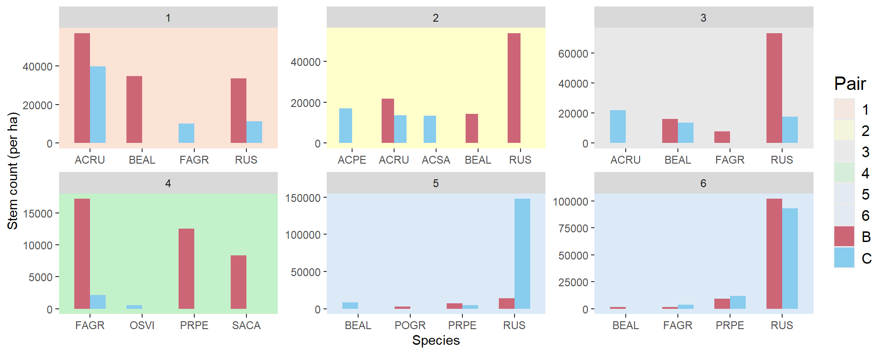
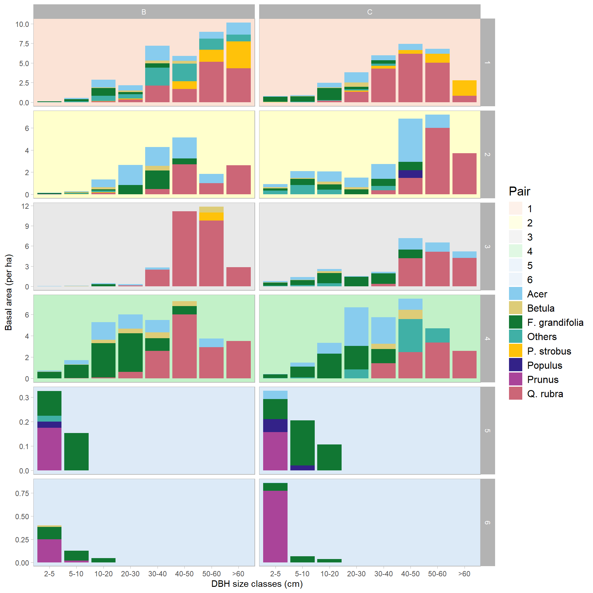
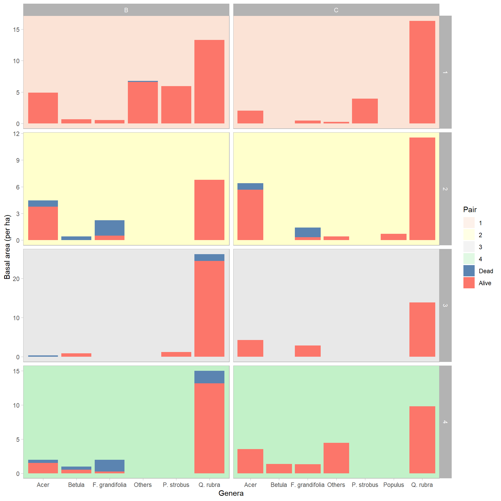
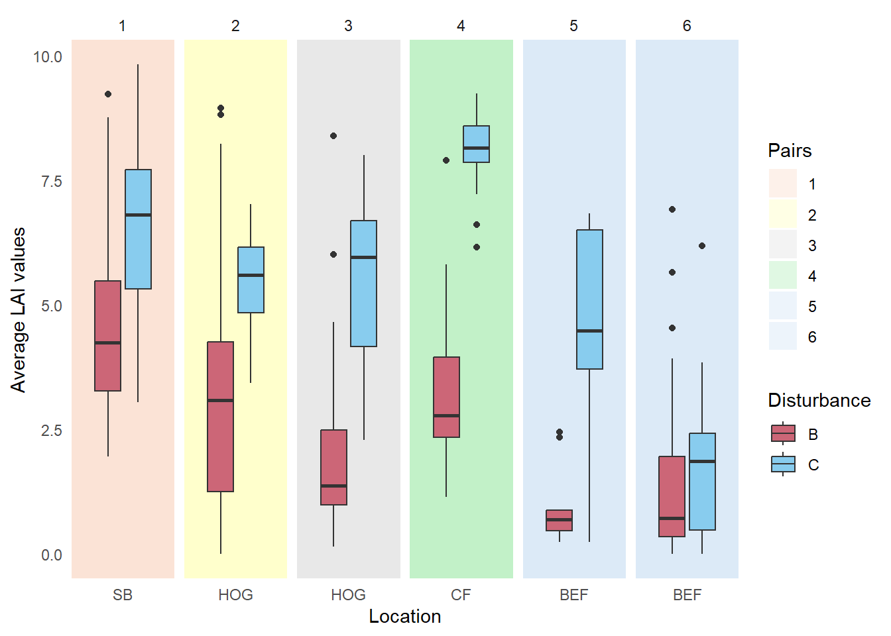
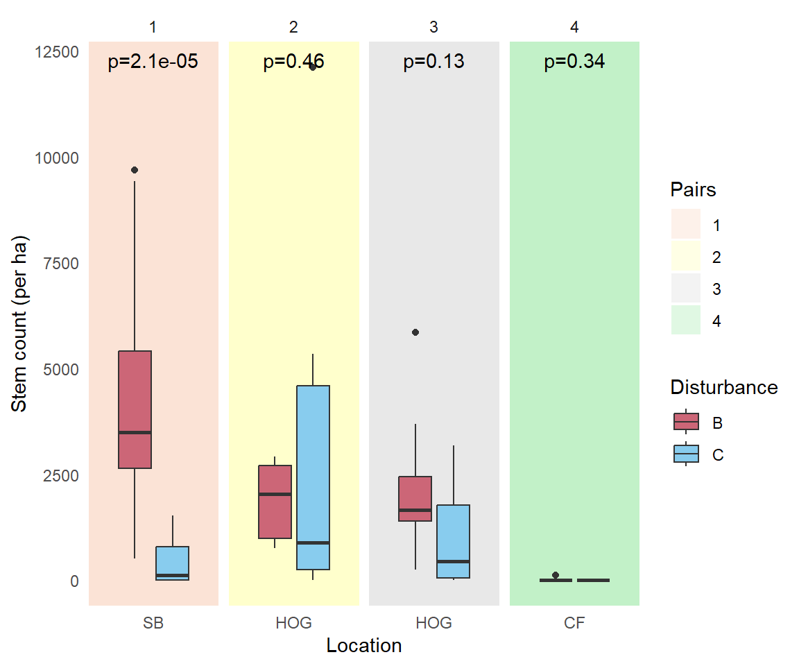
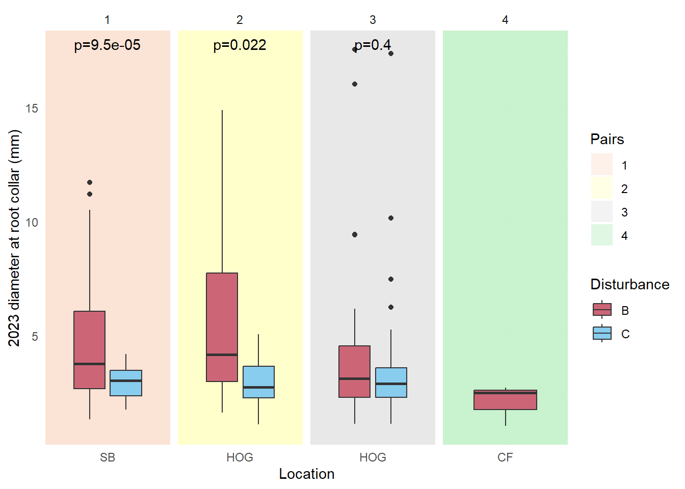
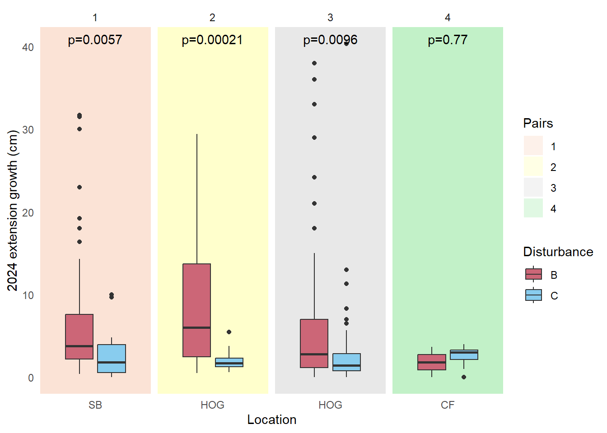
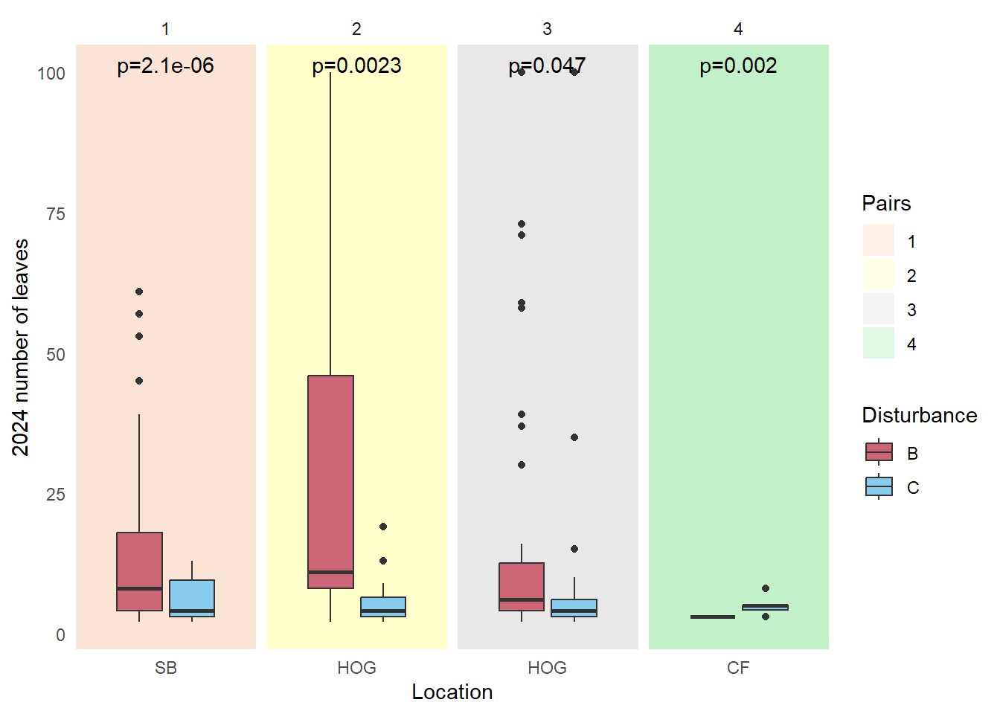

Effects of silvicultural burns on Quercus rubra regeneration near its northern range limit
Author names: Khanh Ton a, Matt Vadeboncoeur a, Nat Cleavitt b, Heidi Asbjornsen a
a Earth Systems Research Center, University of New Hampshire, Durham, NH, USA
b Department of Natural Resources and the Environment, Cornell University, Ithaca, NY, USA
Corresponding author:
Present/permanent address:
You can access my codes here: https://github.com/mykhanh0504/rxfire-oak
Abstract
(250 words)
Keywords
(1-7 keywords) climate resilience, plant-soil feedback, prescribed fire, Quercus rubra, regeneration
Highlights
(separate editable file)
(3-5 bullet points, each a maximum of 85 characters including space)
1 Introduction
Northern red oak (Quercus rubra L.) is an economically and ecologically important tree species in the northeastern United States. It is a fast-growing species and thrives on a wide range of upland soils (Abrams 1992). Additionally, it is tolerant of heat, drought (Coble et al. 2017, Asbjornsen et al. 2021), and ground fire (Abrams 2000). Q. rubra produces high-quality timber with high wood density, making it an important lumber commodity and prompting forest managers to be concerned with its sustainable regeneration (Dey and Schweitzer 2018). Q. rubra is managed for other ecological values as well. For example, it serves as a habitat and food source for many wildlife species, from birds like turkeys and jays to mammals like mice, squirrels, and deer, and even insects like weevils (Mcshea et al. 2007). Acorn mast production, occurring about every two years, plays a critical role in driving their population dynamics (Sork et al. 1993).
Q. rubra currently faces many regeneration challenges in the northeastern US, and its recruitment may continue failing without timely and appropriate interventions. Oak-dominated forests are at their peak capacity to produce acorns at present; however, if forest aging continued for the next 50 years without sufficient regeneration to maintain its age structure, a population bottleneck may ensue (Dey 2014). Acorns have become a major hard mast source for wildlife consumption since the demise of American chestnut, but their production declines in older stands (McEwan and Muller 2006). Weevils can also make the acorns non-viable before they are fully mature. This high seed predation strongly limits successful advance regeneration outside of mast years (Mcshea et al. 2007). Moreover, seedling root penetration into underlying soils can be hindered by thick litter layers and can result in long and weak stems. (Arthur et al. 2012). Even when seedlings are established, they risk getting eaten, especially by deer (Mcshea et al. 2007). Q. rubra is also susceptible to some fungal pathogens later in its life cycle including Bretziella fagacearum and Armillaria mellea, which cause oak wilt and Armillaria root rot respectively. While the former disease is spread from tree to tree through root grafts and travels longer distances by Nitidulidae and Pseudopityophthorus spp., the latter grows parasitically on trees weakened by fire, drought, insects, or other diseases (Sander 1990). Lastly, its relative shade intolerance retards its seedling recruitment when there is insufficient light in the understory (Nowacki and Abrams 2008). Seedling growth might be slow due to competition from more shade-tolerant species such as red maple (Acer rubrum) and American beech (Fagus grandifolia).
Abrams (1992) hypothesized that ground fire might be crucial for oak regeneration. Fire has been integral to upland oak systems in the eastern US for millennia, evidenced by the co-presence of charcoal and oak dominance. Pre-settlement fires occurred as a function of lightning strikes as well as native activities such as cooking, heating, seedbed preparation, hunting, ceramic manufacture, and communication (Nowacki and Thomas-Van Gundy 2024). European settlement continued the periodic burning; furthermore, they spent the first half of the 19th clearing land for agriculture, then the second half abandoning such farmland. Abandoned fields quickly became white pine-dominated forests (Pinus strobus), which was promptly logged as timber. Q. rubra was released from the understory and became dominant in the mid-20th century at last (Nowacki and Abrams 2008). Oak recruitment, however, sharply declined shortly afterward as forests were becoming wetter and more shady. Implementation of aggressive federal fire suppression efforts, combined with land conversion and overgrazing legacy, started to promote forest mesophication. Mesic microenvironmental conditions in turn favored the regeneration of shade-tolerant species. This positive feedback loop shrinks suitable habitats for shade-intolerant, fire-adapted species like Q. rubra over time. Therefore, it has been argued that it is necessary to bring back fire in a controlled manner to reverse the feedback loop and restore the upland oak ecosystems (Abrams 1992).
The other important consideration for oak regeneration is that Q. rubra distribution is projected to move further northward due to climate change (Peters et al. 2020a). Out of all Quercus species native to North America, it is the one with the most northern distribution. Previously, it was pushed southward to its modern-day distributions during the Eocene-Oligocene climate transition 34 million years ago due to a 3-5oC decrease in temperature at high latitudes (Hipp et al. 2018). However, its potential distribution is now projected to increase substantially in New England by 2100, particularly in northern New York, Vermont, New Hampshire, and Maine, under both representative concentration pathways (RCP) 4.5 and 8.5 due to high adaptability to a changing climate (Peters et al. 2020b). This presents an opportunity for foresters, landowners, and scientists with an interest in introducing or increasing Q. rubra density as part of their species mix at or beyond its current range limit as a timber producing species using silvicultural strategies to better understand what limits its regeneration near its northern range limit. Adaptive silviculture can be implemented to ensure this seamless transition and contribute towards long-term resilience on the stand level (Nagel et al. 2017). Adding another species like Q. rubra to the mix can increase an ecosystem’s functional diversity, potentially stabilizing it and mitigating future stresses and disturbances such as drought impacts (Yu’an 2025). Silvicultural methods range from different ways of thinning and artificial planting to prescribed burns and combinations of them. Since oaks are not of any distinctive commercial value until they reach a diameter at breast height (DBH) of 30 cm, regeneration strategies need to be lengthy processes to ensure its establishment, development of advanced regeneration to 1.4 m, and release (Desmarais 1998). Syncing forest operations with nature’s timing is another important consideration. For example, it might be sensible to do shelterwood cutting, during which a portion of trees is removed uniformly over the plot, during bareground seasons to scarify the soil and bury acorns below the soil surface. Many previous studies have demonstrated that fire, alone or when combined with thinning, strengthens or re-establishes its dominance in different ecosystems through a combination of greater relative fire resistance and easing other regeneration limitations (Iverson et al. 2008, Granger et al. 2018, Bassett et al. 2020, Dee et al. 2022). This study built on previous research and further explored prescribed fire’s role in oak range expansion.
This study investigates whether prescribed fire promotes the recruitment of Q. rubra seedlings and improves their growth relative to other forest management practices. We studied six pairs of burn and control forest stands across the White Mountains ecoregion in New Hampshire, USA. Three pairs were intentionally harvested and prescribed burn treatments applied with the objective of improving oak regeneration. Two other pairs lack an oak seed source but can provide insights into northern hardwood regeneration dynamics following prescribed burns. The last pair were unmanaged and experienced a wildfire instead, making it a fitting comparison. An additional unharvested pair with a prescribed burn was included for soil sampling only. We hypothesized that Q. rubra possesses fire-tolerant traits that give them an edge over more mesophytic species such as thick bark and deep roots (Abrams 1992). Mother trees hence have greater survival rates, giving them more time and better chances at reproducing while their competitors experience dieback (Dey and Schweitzer 2018). Prescribed fire burns can promote Q. rubra regeneration at any and all critical life stages including pollination, flowering, seed set, and germination (Arthur et al. 2012).
2 Methods
2.1 Study sites
The selected pairs of burn and control forest stands for this study are located in the approximately 320,000-ha White Mountains National Forest (WMNF) in New Hampshire (USA), three of which are part of a novel landscape-scale project guided by the forest’s Land and Resource Management Plan (1999-2005, (USDA Forest Service 2005)) and implemented by the USFS over the past two decades. They are paired by project and treatment date, with one stand harvested and the paired site harvested and burned (Table 1, Figure 1). One pair does not have any recent management history, but was sampled opportunistically following a wildfire that resulted in patchy mortality of canopy trees in a mature stand. The remaining two pairs at Bartlett Experimental Forest were burned rather opportunistically, as a way to study how a combination of clearcut and prescribed fire can impact overall vegetation regeneration. While there existed some Q. rubra seedlings in the surrounding forest stands and even burned acorns in the study stands, no seed source was present after the treatments. Mature trees were presumed to be harvested during the clearcuts.
| Pair | Stand | Burn year | Harvest year | Harvest treatment |
|---|---|---|---|---|
| 1 | Stevens Brooks SB_3/16B |
2017 | 2010 | Shelterwood |
| 1 | SB_5/15C |
- | 2011 | Shelterwood |
| 2 | Hogsback HOG_20/2B |
2017 | 2012 | Seedtree |
| 2 | HOG_3/1C |
- | 2012 | Seedtree |
| 3 | Hogsback HOG_28/2B |
2018 | 2014 | Shelterwood |
| 3 | HOG_12/2C |
- | 2013 | Shelterwood |
| 4 | Crawford Notch State Park CF_B |
2022 | - | - |
| 4 | CF_C |
- | - | - |
| 5 | Bartlett Experimental Forest BEF_44B |
2021 | 2019 | Clearcut |
| 5 | BEF_45C |
- | 2019 | Clearcut |
| 6 | Bartlett Experimental Forest BEF_46B |
2021 | 2019 | Clearcut |
| 6 | BEF_46C |
- | 2019 | Clearcut |

2.2 Field data collection
2.2.1 Site characterization
In summer 2023, transects (50 -225 m long) were laid 30 to 50 m apart to sample the variety of light and soil conditions in each study stand. Along a transect is a series of 1 m² quadrats (hereafter referred to as “plots”) spaced 10 m apart from their centers. In total, there were 43 transects laid in 6 pairs of burn-control stands, amounting to 393 plots. Percent slope, aspect, microtopography, burn evidence, and Q. rubra litter presence were recorded for each plot. Slope was determined with a hypsometer and later validated with topography maps, and aspect with a compass. Microtopography was described qualitatively, and burn evidence at the plot scale was confirmed with charcoal presence under the litter layer. Surface cover was estimated in categories including bare soil, woody debris, leaf litter, and rock. Live vegetation cover below breast height was also estimated visually. Woody species with DBH smaller than 2 cm were identified and their stems counted.
In July-August 2024, leaf area index (LAI) measurements were made at the center of each plot as a metric of light availability. The LI-COR LAI-2200C Plant Canopy Analyzer was positioned at ~50 cm height to assess the light availability to seedlings. LAI data was then matched, calibrated, and analyzed using the LI-COR FV2200 software.
2.2.2 Seedling measurements and sample collection
In summer 2023, any Q. rubra seedlings present in the 1 m2 plots were tagged, aged, measured for height (cm) and diameter at root collar (DRC, mm), and checked for evidence of herbivory and pathogen damage. In summer 2024, they were resurveyed twice, once in June and again in August, to quantify growth between the two growth seasons and within this season alone. At this time, we also counted the number of leaves and number of live and dead branches. Herbivory and pathogen damage were quantified percentage-wise as well as described qualitatively.
Within a 5 m radius of each plot center, trees >2 cm DBH were identified and measured. The number of Q. rubra seedlings was also counted. In summer 2024, seedling abundance was re-estimated twice, once at the beginning and again at the end of the season.
2.3 Data visualization and analysis
Plot-level stem and seedling counts and basal areas were expressed per hectare. Box plot graphs of seedling counts and various abovementioned growth measurements as well as LAI measurements were also constructed. Suitable statistical analyses, mostly analysis of variance (ANOVA) with blocking, were carried out in R version 4.4.0 for each response variable to test for hypothesized differences between prescribed fire and control pairs. Response variables included LAI values, seedling density, DRC, extension growth, and number of leaves. Data visualization and analysis packages included forcats, ggplot2, tidyverse, dplyr, gt, car, rstatix, and ggpubr.
3 Results
3.1 Stand characterization
In the understory of the burned stands, Q. rubra mainly competes with early successional seedlings e.g. raspberries (Rubus spp.), A. rubrum, yellow birch (Betula alleghaniensis) and stump sprouts e.g. F. grandifolia (Figure 2). Rubus is prevalent in all but Pair 4, ranging from 14000 stems per hectare in Pair 5 to 102000 stems ha-1 in Pair 6. A. rubrum was abundant only among Pairs 1, 2, and 3 and is more abundant in burned stands than in control stands e.g., with a stem density of 57000 ha-1 in the former versus 40000 in the latter in Pair 1. B. alleghaniensis follows a similar pattern while F. grandifolia is most common in Pair 4, especially the burned stand with 17000 stems ha-1 compared to 2000 in the control stand.
Study stands’ basal areas are a reflection of their harvesting methods more than whether or not they were burned (Figure 3). Having been clearcut more recently and hence absent of trees of 20 cm and above in DBH, Pairs 5 and 6 have substantially lower basal areas, all under 1 m2 per hectare, compared to others with 18.3 (burned stand in Pair 2) to 37.9 m2 (burned stand in Pair 1). Their compositions are also the least diverse, consisting of cherries (Prunus), aspens (Populus), and Betula spp. The remaining stands have a significant presence of mature Q. rubra as well as Acer and Betula spp. of mid-ranged DBH classes. Additionally, Pair 1’s overstory composition includes a large basal area of high-DBH P. strobus. Q. rubra’s basal areas were about 10 m2/ha across all stands, far exceeding those of other dominant genera (Figure 4). More standing dead trees were recorded in the burned stands, with F. grandifolia suffering the highest mortality rate.


Burned stands have lower LAI values (averaging 3.2±0.2) than control stands (5.4±0.2, p<0.001) (Figure 5).

3.2 Q. rubra seedling density and measurements in the field
Seedling density in 2023 was three times greater in burned stands (2887±240 per ha) than in control stands (1030±154 per ha, p<0.001) (Figure 6). Seedlings in burned stands also grew better than in control stands, evidenced by greater DRC in 2023 (4.6±0.3 mm versus 3.3±0.3 mm, p<0.01) (Figure 7), greater extension growth in 2024 (6.43±0.5 cm versus 2.6±0.4 cm, p<0.001) (Figure 8), and more leaves sprouted (16±1 versus 7±1, p<0.001) (Figure 9).




4 Discussion
Q. rubra seedling density in burned stands is nearly triple that in control stands, supporting the hypothesis that prescribed fire promotes seedling recruitment (Figure 6). We did not find any significant effect the different cutting treatments may have had on such recruitment; though the cuttings took place at different years, complicating the comparison. When these cutting treatments took place, management left behind mostly Q. rubra trees in the highest DBH size classes, 30 cm and above (Figure 3). The mother trees survived the burns better than their mesophytic competitors (Figure 4) and continued to reproduce while their competition took time to regrow. Their survival rates are higher potentially due to thicker bark and rapid compartmentalization, among other factors (Dey and Schweitzer 2018). There is evidence that acorn production is positively correlated to tree vigor i.e full-crowned dominant trees of larger DBHs produce more acorns (Bogdziewicz et al. 2020). Even though acorn production is also dependent on tree genetics (Smith et al. 2022), meaning that “good” producers are more likely to yield larger crops, thinning and burning to release the healthiest-looking individuals raises the chance of achieving better yields.
Additionally, fire can alter soil resource supply by accelerating nitrogen cycling, which in turns releases more of it into the soil (Chapin and Vitousek 2012). A sudden increase in nitrogen availability in the nitrogen-limited temperate forest (Vadeboncoeur 2010) may help promote flowering and acorn production (Callahan et al. 2008). Nitrogen is volatile, however, and some in the litter layer can become lost permanently from the ecosystem rather than being tightly recycled in decomposition. In terms of acorn germination success, fire is assumed to decrease acorn herbivory, which can lead to nonviable seeds or low-vigor seedlings, by interfering with insects’ life cycle portions spent in the soil (Riccardi et al. 2004). For example, Conotrachelus spp. and Curculio spp. and could be killed by fire while exiting from fallen acorns or while in the forest floor layers attempting to reach the soil. Fire consumption of the forest floor removes their hiding areas and presents them to greater predation by small mammals. Another benefit fire provides is lessening the litter thickness, which in turns aids root penetration and avoids long and weak stems growing through thick litter (Hutchinson et al. 2024).
Diameter at root collar, extension growth, and number of leaves were significantly greater for Q. rubra seedlings in burned stands versus control stands (Figure 7, Figure 8, Figure 9). While mesophytic competitors experience dieback and invest their resources in regrowing, Q. rubra seedlings make use of nutrients, space, and light that are more available than ever (Figure 5) to grow taller vertically and horizontally as well as produce leaves to expedite photosynthesis. Additionally, they might have grown better by taking advantage of the temporary increases in available nitrogen pools (Wan et al. 2001) and fluxes (Wang et al. 2014) immediately after fires to store carbon into the stems. On the other hand, the significantly larger annual extension growths and leaf sproutings in the past two summers imply that the positive fire effects still linger 3-7 years post-treatment.
It is also worth evaluating fire effects on competitors at the germination and seedling establishment stage. Fire can reduce seed bank abundance (Schuler et al. 2010), but it is more likely that the seed bank remains abundant after one-time burns like in our study. In the understory, early successional seedlings are plentiful, mostly comprising Rubus spp., A. rubrum, and Betula spp. (Figure 2). Rubus seeds are dispersed by birds and mammals that survive in the soil when buried (Zasada and Tappeiner III 2008). The latter two do not survive well in the soil when a prescribed burn takes place but, if mother trees survived the fire, they are capable of producing high volumes of wind-dispersed seeds that germinate well in the postfire exposed mineral soil Erdmann (1990). On the other hand, acorns neither survives in the soil for multiple years nor disperse far (Sander 1990). Nevertheless, Q. rubra has comparably strong sprouting responses to disturbances much like A. rubrum and F. grandifolia (Tubbs and Houston 1990).
Prescribed burns can only be considered an effective management tool for Q. rubra regeneration if their effects are net positive. This means doing less damage to our target species than its existing competitors, and promote its regeneration over them. Our study demonstrates such positive effects for both oak recruitment and establishment near its northern range limit in North America and affirms prescribed fire as a potentially beneficial silvicultural management tool in introducing the species north of its current distribution and ensuring forest resiliency in time of climate change. The study, nevertheless, can become more meaningful when belowground variables are explored. Q. rubra is known to allocate more resources belowground in the first few years than aboveground (Kolb et al. 1990). While destructive harvesting of seedlings lies outside of this project, their belowground structures would have provided a more comprehensive understanding of what role fire plays in this resource allocation. Other mechanisms at play, especially fire-soil interactions, can further illuminate how fire influences nutrient pools and fluxes as well as mycorrhizal fungal colonization and soil microbial communities.
5 Acknowledgements
Field work assistants: Abigail Powell (Duquesne University, Summer NSF REU administered by the Hubbard Brook Research Foundation); Elena Gonzalez, Chris Owen, and Anthony Pera III (Cornell University, funded by the HBR-LTER; NSF Award # 2224545).
Khanh Ton: Data curation, Formal analysis, Methodology, Software, Visualization, Writing - original draft
Matt Vadeboncoeur: Conceptualization, Data curation, Funding acquisition, Methodology, Project administration, Resources, Supervision, Validation, Writing - review & editing
Nat Cleavitt: Conceptualization, Data curation, Funding acquisition, Methodology, Project administration, Resources, Supervision, Validation, Writing - review & editing
Heidi Asbjornsen: Funding acquisition, Resources, Supervision, Validation
This study was funded by the Northeastern States Research Cooperative through funding made available by the USDA Forest Service. The conclusions and opinions in this paper are those of the authors and not of the NSRC, the Forest Service, or the USDA. This institution is an equal opportunity provider.
6 References
6.1 R packages
[1] F. Aust. citr: RStudio Add-in to Insert Markdown Citations. R package version 0.3.2. 2019. https://github.com/crsh/citr.
[2] C. Boettiger. knitcitations: Citations for Knitr Markdown Files. R package version 1.0.12. 2021. https://github.com/cboettig/knitcitations.
[3] W. Chang, J. Cheng, J. Allaire, et al. shiny: Web Application Framework for R. R package version 1.9.1. 2024. https://CRAN.R-project.org/package=shiny.
[4] G. Grolemund and H. Wickham. “Dates and Times Made Easy with lubridate”. In: Journal of Statistical Software 40.3 (2011), pp. 1-25. https://www.jstatsoft.org/v40/i03/.
[5] K. Müller and H. Wickham. tibble: Simple Data Frames. R package version 3.2.1. 2023. https://CRAN.R-project.org/package=tibble.
[6] R Core Team. R: A Language and Environment for Statistical Computing. R Foundation for Statistical Computing. Vienna, Austria, 2022. https://www.R-project.org/.
[7] V. Spinu, G. Grolemund, and H. Wickham. lubridate: Make Dealing with Dates a Little Easier. R package version 1.9.3. 2023. https://CRAN.R-project.org/package=lubridate.
[8] H. Wickham. forcats: Tools for Working with Categorical Variables (Factors). R package version 1.0.0. 2023. https://CRAN.R-project.org/package=forcats.
[9] H. Wickham. ggplot2: Elegant Graphics for Data Analysis. Springer-Verlag New York, 2016. ISBN: 978-3-319-24277-4. https://ggplot2.tidyverse.org.
[10] H. Wickham. stringr: Simple, Consistent Wrappers for Common String Operations. R package version 1.5.1. 2023. https://CRAN.R-project.org/package=stringr.
[11] H. Wickham. tidyverse: Easily Install and Load the Tidyverse. R package version 2.0.0. 2023. https://CRAN.R-project.org/package=tidyverse.
[12] H. Wickham, M. Averick, J. Bryan, et al. “Welcome to the tidyverse”. In: Journal of Open Source Software 4.43 (2019), p. 1686. DOI: 10.21105/joss.01686.
[13] H. Wickham, W. Chang, L. Henry, et al. ggplot2: Create Elegant Data Visualisations Using the Grammar of Graphics. R package version 3.5.1. 2024. https://CRAN.R-project.org/package=ggplot2.
[14] H. Wickham, R. François, L. Henry, et al. dplyr: A Grammar of Data Manipulation. R package version 1.1.4. 2023. https://CRAN.R-project.org/package=dplyr.
[15] H. Wickham and L. Henry. purrr: Functional Programming Tools. R package version 1.0.2. 2023. https://CRAN.R-project.org/package=purrr.
[16] H. Wickham, J. Hester, and J. Bryan. readr: Read Rectangular Text Data. R package version 2.1.5. 2024. https://CRAN.R-project.org/package=readr.
[17] H. Wickham, D. Vaughan, and M. Girlich. tidyr: Tidy Messy Data. R package version 1.3.1. 2024. https://CRAN.R-project.org/package=tidyr.
[18] Y. Xie. Dynamic Documents with R and knitr. 2nd. ISBN 978-1498716963. Boca Raton, Florida: Chapman and Hall/CRC, 2015. https://yihui.org/knitr/.
[19] Y. Xie. “knitr: A Comprehensive Tool for Reproducible Research in R”. In: Implementing Reproducible Computational Research. Ed. by V. Stodden, F. Leisch and R. D. Peng. ISBN 978-1466561595. Chapman and Hall/CRC, 2014.
[20] Y. Xie. knitr: A General-Purpose Package for Dynamic Report Generation in R. R package version 1.42. 2023. https://yihui.org/knitr/.
[21] Y. Xie. “TinyTeX: A lightweight, cross-platform, and easy-to-maintain LaTeX distribution based on TeX Live”. In: TUGboat 40.1 (2019), pp. 30-32. https://tug.org/TUGboat/Contents/contents40-1.html.
[22] Y. Xie. tinytex: Helper Functions to Install and Maintain TeX Live, and Compile LaTeX Documents. R package version 0.53. 2024. https://github.com/rstudio/tinytex.
6.2 Literature
Abrams, M. D. 1992. Fire and the Development of Oak Forests. BioScience 42:346–353.
Abrams, M. D. 2000. Fire and the ecological history of oak forests in the eastern United States. Proceedings: Workshop on fire, people, and the central hardwoods landscape:12–14.
Arthur, M. A., H. D. Alexander, D. C. Dey, C. J. Schweitzer, and D. L. Loftis. 2012. Refining the Oak-Fire Hypothesis for Management of Oak-Dominated Forests of the Eastern United States. Journal of Forestry 110:257–266.
Asbjornsen, H., C. D. McIntire, M. A. Vadeboncoeur, K. A. Jennings, A. P. Coble, and Z. C. Berry. 2021. Sensitivity and threshold dynamics of pinus strobus and quercus spp. In response to experimental and naturally occurring severe droughts. Tree Physiology 41:1819–1835.
Bassett, T. J., D. A. Landis, and L. A. Brudvig. 2020. Effects of experimental prescribed fire and tree thinning on oak savanna understory plant communities and ecosystem structure. Forest Ecology and Management 464:118047.
Bogdziewicz, M., J. Szymkowiak, R. Calama, E. E. Crone, J. M. Espelta, P. Lesica, S. Marino, M. A. Steele, B. Tenhumberg, A. Tyre, M. Żywiec, and D. Kelly. 2020. Does masting scale with plant size? High reproductive variability and low synchrony in small and unproductive individuals. Annals of Botany 126:971–979.
Callahan, H. S., K. Del Fierro, A. E. Patterson, and H. Zafar. 2008. Impacts of elevated nitrogen inputs on oak reproductive and seed ecology. Global Change Biology 14:285–293.
Chapin, F., and P. Vitousek. 2012. Principles of terrestrial ecosystem ecology. Springer Science & Business Media.
Coble, A. P., M. A. Vadeboncoeur, Z. C. Berry, K. A. Jennings, C. D. McIntire, J. L. Campbell, L. E. Rustad, P. H. Templer, and H. Asbjornsen. 2017. Are Northeastern U.S. forests vulnerable to extreme drought? Ecological Processes 6:34.
Dee, J. R., M. C. Stambaugh, and D. C. Dey. 2022. Age, growth, longevity, and post-fire/thinning response of chinkapin oak seedlings in a kansas upland hardwood forest. The Journal of the Torrey Botanical Society 149.
Desmarais, K. 1998. Northern red oak regeneration: Biology and silviculture.
Dey, D. C. 2014. Sustaining oak forests in eastern north america: Regeneration and recruitment, the pillars of sustainability. Forest Science 60:926–942.
Dey, D., and C. Schweitzer. 2018. A Review on the Dynamics of Prescribed Fire, Tree Mortality, and Injury in Managing Oak Natural Communities to Minimize Economic Loss in North America. Forests 9:461.
Erdmann, G. 1990. Betula alleghaniensis britton. Silvics of North America 2:133–147.
Granger, J. J., D. S. Buckley, T. L. Sharik, J. M. Zobel, W. W. DeBord, J. P. Hartman, J. G. Henning, T. L. Keyser, and J. M. Marshall. 2018. Northern red oak regeneration: 25-year results of cutting and prescribed fire in Michigan oak and pine stands. Forest Ecology and Management 429:467–479.
Hipp, A. L., P. S. Manos, A. González-Rodríguez, M. Hahn, M. Kaproth, J. D. McVay, S. V. Avalos, and J. Cavender-Bares. 2018. Sympatric parallel diversification of major oak clades in the Americas and the origins of Mexican species diversity. New Phytologist 217:439–452.
Hutchinson, T. F., B. T. Adams, M. B. Dickinson, M. Heckel, A. A. Royo, and M. A. Thomas-Van Gundy. 2024. Sustaining eastern oak forests: Synergistic effects of fire and topography on vegetation and fuels. Ecological Applications 34:e2948.
Iverson, L. R., T. F. Hutchinson, A. M. Prasad, and M. P. Peters. 2008. Thinning, fire, and oak regeneration across a heterogeneous landscape in the eastern U.S.: 7-year results. Forest Ecology and Management 255:3035–3050.
Kolb, T. E., K. C. Steiner, L. H. McCormick, and T. W. Bowersox. 1990. Growth response of northern red-oak and yellow-poplar seedlings to light, soil moisture and nutrients in relation to ecological strategy. Forest Ecology and Management 38:65–78.
McEwan, R. W., and R. N. Muller. 2006. Spatial and temporal dynamics in canopy dominance of an old-growth central Appalachian forest. Canadian Journal of Forest Research 36:1536–1550.
Mcshea, W. J., W. M. Healy, P. Devers, T. Fearer, F. H. Koch, D. Stauffer, and J. Waldon. 2007. Forestry Matters: Decline of Oaks Will Impact Wildlife in Hardwood Forests. The Journal of Wildlife Management 71:1717–1728.
Nagel, L. M., B. J. Palik, M. A. Battaglia, A. W. D’Amato, J. M. Guldin, C. W. Swanston, M. K. Janowiak, M. P. Powers, L. A. Joyce, C. I. Millar, D. L. Peterson, L. M. Ganio, C. Kirschbaum, and M. R. Roske. 2017. Adaptive Silviculture for Climate Change: A National Experiment in Manager-Scientist Partnerships to Apply an Adaptation Framework. Journal of Forestry 115:167–178.
Nowacki, G. J., and M. D. Abrams. 2008. The Demise of Fire and “Mesophication” of Forests in the Eastern United States. BioScience 58:123–138.
Nowacki, G. J., and M. A. Thomas-Van Gundy. 2024. Using witness trees as pyro-indicators to depict past fire environments across the eastern United States. Fire Ecology 20:13.
Peters, M. P., S. N. Matthews, and L. R. Iverson. 2020a. Climate change tree atlas, Version 4. U.S. Forest Service, Northern Research Station and Northern Institute of Applied Climate Science, Delaware, OH.
Peters, M. P., S. N. Matthews, and L. R. Iverson. 2020b. Climate change tree atlas, version 4. U.S. Forest Service, Northern Research Station and Northern Institute of Applied Climate Science, Delaware, OH.
Riccardi, C., B. C. McCarthy, and R. Long. 2004. Oak seed production, weevil (coleoptera: Curculionidae) populations, and predation rates in mixed-oak forests of southeast ohio. Pages 10–21. Wooster, OH.
Sander, I. 1990. Quercus rubra l. Northern red oak. Silvics of North America 2:727–733.
Schuler, T. M., M. T. Van-Gundy, M. B. Adams, and W. M. Ford. 2010. Seed bank repsonse to prescribed fire in the central appalachians. Page 9.
Smith, S. J., B. C. McCarthy, T. F. Hutchinson, and R. S. Snell. 2022. Individual-level variation in reproductive effort in chestnut oak (Quercus montana Willd.) and black oak (Q. Velutina Lam.). Forest Ecology and Management 508:120029.
Sork, V. L., J. Bramble, and O. Sexton. 1993. Ecology of Mast-Fruiting in Three Species of North American Deciduous Oaks. Ecology 74:528–541.
Tubbs, C., and D. Houston. 1990. Fagus grandifolia ehrh. American beech. Silvics of North America 2:325.
USDA Forest Service. 2005. Land and resource management plan. Laconia, NH.
Vadeboncoeur, M. A. 2010. Meta-analysis of fertilization experiments indicates multiple limiting nutrients in northeastern deciduous forests. Canadian Journal of Forest Research 40:1766–1780.
Walters, R., and H. Yawney. 1990. Acer rubrum l. Red maple. Silvics of North America 2:60–69.
Wan, S., D. Hui, and Y. Luo. 2001. FIRE EFFECTS ON NITROGEN POOLS AND DYNAMICS IN TERRESTRIAL ECOSYSTEMS: A META-ANALYSIS. Ecological Applications 11:1349–1365.
Wang, Y., Z. Xu, and Q. Zhou. 2014. Impact of fire on soil gross nitrogen transformations in forest ecosystems. Journal of Soils and Sediments 14:1030–1040.
Yu’an, W. 2025. Plant biodiversity and drought resilience: Insights from a resilience model study in north america. Ecological Frontiers 45:507–513.
Zasada, J., and J. Tappeiner III. 2008. Rubus l. Blackberry, raspberry. Woody Plant Seed Manual 727:984–996.